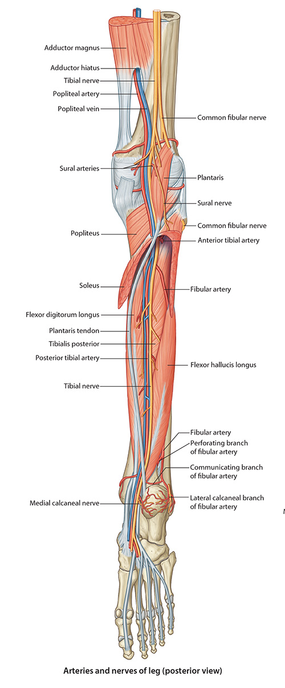

Lab 7 - Module 2 - Posterior Compartment of the Leg: Page 1 of 3
READINGS:Gray's Anatomy for Students (Fourth Edition): Pages: 615-624 |
×

Deep Posterior Compartment of the Leg
|  |
| Tap on image to enlarge |
| Boundaries of the Deep Postior Compartment are the tibia, fibula, and interosseous membrane anteriorly and the transverse intermuscular septum posteriorly. Muscular components of the deep posterior compartment are: |
| Begin with a view of the Posterior Leg. |
| Add the Posterior Tibialis muscle. |
|
Origin - Posterior surface of the interosseous membrane, posterior surface of the tibia, posteiror surface of the fibula Insertion - Tuberosity of the navicular bone of the foot, may send slips to the 3 cunieforms, cuboid and 2nd-4th metatarsal bones Innervation - Tibial Nerve Action - Plantarflexion of the ankle, inversion of the foot |
| Add the Flexor Digitorum Longus muscle. |
|
Origin - Posterior surface of the tibia and the fascia of posterior tibialis Insertion - Base of the distal phalanx of the four lateral toes Innervation - Tibial Nerve Action - Flexes the four lateral toes, assists with plantar flexion |
| Add the Politeal Artery. |
| Add the Posterior Tibial Artery which is the major blood supply of the compartment is from the posterior tibial artery. |
If the pain is in the “calf” region, how do you explain the numbness and tingling in the plantar aspect of her foot? |
|
|
Compose an answer to help focus your study of this module. |
|
| Add the Flexor Hallicus Longus muscle. |
|
Origin - Inferior 2/3rds of the posterior fibula and the inferior part of the interosseous membrane Insertion - Base of the distal phalanx of the great toe Innervation - Tibial Nerve Action - Flexes the great toe, assists with plantar flexion |